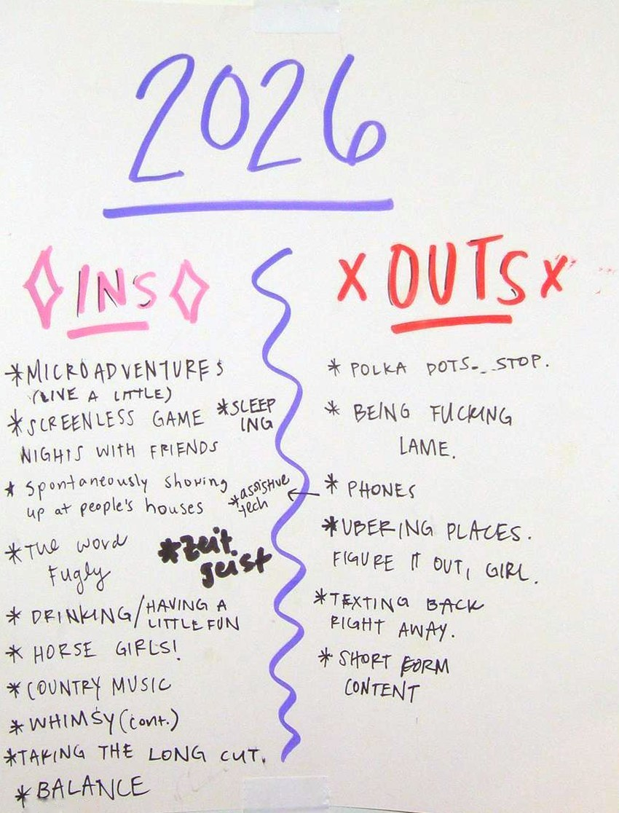

My story

I think we can all relate to the feeling of kind of hating our phones a little bit? Whether it's the hours spent scrolling, the content that floods in the moment you open your phone in the morning, or the fact that it feels virtually impossible to exist without it – phones just have a hold on us. We rarely even go from one room to the next without them. This feeling had been quietly creeping in for me over the past few years, and it was slowly growing harder to ignore. Looking back at the 2026 ins and outs list I made with my friends, it's quite apparent where my head was at.
The list is funny, but it's also a real indication of the frustration that I had built up around smartphones and navigating modern relationships online. Last year, I bought a book about mindfulness because I genuinely felt like my head was all over the place, and I was trying to figure out how to slow my thoughts down a little. The more I read about the author's experience with mindfulness, the more I noticed how rarely I was truly present for most things. His writing explores how ordinary tasks, like washing the dishes, can actually be a chance to practice being present. Rather than rushing through them to get to the next thing, he talks about letting your attention rest entirely on the dishes in front of you, taking in each step of the process. The same goes for walking down the street: paying attention to the walk itself and whatever you happen to come across along the way, instead of rushing to get somewhere while distracted or preoccupied. Upon reading this book, I realized that one of the very few times I felt fully present was when I was biking – a hobby that had coincidentally become one of my absolute favorite things to do in the year or two before. Biking is almost a practice of mindfulness in itself: hands on the handlebars, phone tucked away, eyes on the road, with no option but to take in everything in front of you.
The flip side of that realization was noticing just how often I wasn't being present in my day-to-day life, and how much modern phone culture was keeping me from it. I'd wash the dishes while watching a show on my phone. I'd walk down the street with music blasting in my ears, or honestly, sometimes texting or looking something up as I walked. At concerts, I'd catch myself filming for later instead of just watching with my own eyes, spending half the show waiting for the perfect moment to capture. And I don't think I'm alone in that. Phones beg for our attention in a way that makes it hard to go even 10 minutes without being pulled out of the moment.
Some days, I was so distracted and overstimulated that by the time I felt like I could finally focus on anything, it was already 1 or 2 PM. I always found it jarring how quickly the mornings vanished. It legit felt like I'd been pulled into the Lotus Casino from Percy Jackson, like I was in a trance, and by the time I finally snapped out of it, hours had gone by without me. I'd start thinking about weekend plans or a chore I needed to do, and then I'd get a text. That would lead to opening more texts, and then to checking Instagram. And Depop. And Strava. I would have a million trains of thought that would never quite make it to the station.
And honestly, that behavior wasn't entirely my fault – smartphones are designed to draw us in that way. The documentary The Social Dilemma challenges us to ask ourselves why social media and content platforms are free in the first place. The haunting truth is that the apps were never the product: we are, and so is our time. We're paying for them with hours of our lives, and that really did not sit right with me.
It wasn't just the time I was wasting on these apps that bothered me – it was also what I was consuming. I think we've all noticed short-form videos chipping away at our attention spans, but beyond the format, the content itself was starting to get to me. The stuff that does well is the stuff that makes you want to click: something shocking, scary, or sad, anything that makes you feel big emotions. Being fed a random stream of highs and lows was giving me constant emotional whiplash, and it wasn't doing my mental health any good – if anything, quite the opposite. I noticed the same thing in news headlines, which only seemed to get more sensational and alarmist. It all kept me in this constant state of doom, looking for something to numb it, and picking up my phone to do that once again.
Being on social media also made it harder to think for myself. I was constantly seeing this groupthink rhetoric of "we hate this," "this is cancelled," and so on, and with so many people telling me what to think, it got harder to even know what I actually thought. I felt like I had to go along with my corner of the internet on pretty much everything. But sometimes there were takes that frankly didn't make sense to me, and instead of simply thinking, "Hey, I don't agree with that," I could feel myself trying to fit INTO the take, almost questioning my own opinion and wondering what I must be missing, since supposedly everyone in my online circles agreed. Looking back, that's kind of scary. This groupthink mentality can make people feel like they can't have even a slightly different opinion, and I think that's really damaging. I'd so much rather be having conversations and disagreeing than shutting people out at the scent of a slightly differing opinion. It's pretty ironic how anti-social social media has made us.
Beyond my own focus and mental health, there was another issue I slowly identified over the years: how my phone was shaping my relationships. As a somewhat anxious person, I've always found that keeping up with people online does me more harm than good. I think most of us have felt this with Instagram or other social media apps: everyone is posting a highly curated snapshot of their life, and it's easy to forget that it's just a snapshot and start comparing your real life to it. On top of that, I'd catch myself trying to glean all kinds of social information from it: who was commenting on whose posts, who seemed to be friends with who, the FOMO over a reality that didn't even really exist. Location sharing gives me that same uneasy feeling. It's great for safety purposes, but to me it's very odd how normal it's become to need to know exactly where everyone in our lives is at all times, or what they're doing. It all made me feel like a piece of my brain was dedicated to keeping tabs on everyone, and I couldn't shut it down. Our brains just aren't meant to know all of this, all the time.
Then there was the other side of it: keeping up my own presence online. After posting, I'd feel anxious checking who had seen it, who commented, and how it was "doing." Excessive texting came with its own anxiety: the miscommunications, the unclear tone, the waiting when someone wasn't responding. Living so much of my social life online even changed how I saw people. Sometimes I'd find someone's profile before really knowing them, and their posts, or even the way they texted, would intimidate me or make me judge them before we'd ever really hung out, even when they turned out to be completely different in person. I'd rather know people as who they are when I'm with them.
I realized it was almost like living in a parallel universe. I had to maintain a digital version of myself to interact with the digital versions of my friends, who I was somehow now seeking approval from? That felt so unnatural to me. I never feel that anxiety when I share my life with my friends in person. And the more time we spend keeping up that parallel universe, the more it isolates us from this one. You can see it anywhere you go: sitting on the bus surrounded by phone zombies can feel kind of eerie and lonely when everyone around you is staring at a screen, tapped into their digital universe instead of looking up at their real one. It really made me wonder: are our phones actually connecting us less?
I tried deleting apps to help, starting with TikTok a couple years back. When it wasn't TikTok, it was Instagram, so I deleted Instagram after that. By 2025, I'd gotten rid of virtually every other social media app I had left. And in 2026, it was still Depop, my PHOTOS APP. Literally. ANYTHING. Anything to avoid sitting with something that felt even a little challenging, or to combat the smallest bit of boredom. In its own way, my phone was a puff of a vape for thinking. Any time I felt overwhelmed or something felt hard, I'd instinctively reach for it to replace that feeling with some form of numbing content. It felt like time to start recognizing that as the addiction it was.
I had been joking for years about hoping I would lose my phone, that I would get a dumbphone, that one day I'd just microwave it. But it never felt like a real option. No one around me had one. Even people with Androids seemed to get left out, so a flip phone felt out of the question. But I couldn't shake the feeling that something needed to change. A phone addiction might not seem outwardly as debilitating as other addictions, but when I thought about how often I was spending my time staring at a tiny box instead of going out to enjoy the day or spending time with people, over and over again, I felt like there had to be something I could do. So finally, one Sunday morning, after finding myself in a phone hole instead of out enjoying my life, I decided to just… look into it a little bit. And it turns out there were tons of people who had made the switch, and so many others who felt the same way I did. That's when I started to learn everything that I'll now share in my guide :)
I've been off most social media for two years and have been using a dumbphone for about 8 months now, and I can genuinely say the not knowing has been awesome for me. I don't think my brain was meant to know as much as it did all the time. In a good way, my world feels a little smaller now, and it's made life feel so much less overwhelming, like my brain can actually handle the amount of social interaction and stimulation that it gets. I hear updates from my friends when I see them. We show each other photos over dinner, at a get-together, or during an intentional phone call. The two things I hear most are, "But I'd miss my sister's Instagram stories!" and "Don't you feel out of the loop?" And I get it. There are positive things about smartphones and social media, and they're not ALL bad. But for me personally, the negatives outweigh the positives. I'd rather call my family, have them text or even email me pictures, and hear all the details of a story instead of just passively knowing that my friend went on a trip to Europe without having talked to them for the past 8 months. I call people way more than I used to, and I'm able to stay pretty connected through texting too. You do lose the ease of connecting with everyone all the time, but for me it's really deepened how much I invest in my community in real life. I spend a lot of time making plans, gathering people, and calling my long-distance friends and family, which is the kind of effort deep relationships need to last. And if anything, it's given me more time and focus for the important people in my life, and I feel like I have a true community more than ever.
My phone has gone from something I actively disliked to something full of the things I love: messages and photos from my family and friends, and tools to help me get through my day. It finally does what a phone is supposed to do. And I can feel the difference in myself, too. I'm much more comfortable with boredom, I generally feel less anxious, and I have more fun and creative ideas (like making this guide!). Time-wasting stuff doesn't pull me in like it used to, because I think my brain can actually see it for what it is now. And most of what I know about the people in my life comes from actually spending time with them, which I love. If any of this resonates with you, I really hope you give it a try :)
I once saw a YouTube comment that said the internet used to just be a place in our homes, not a constant part of our lives. That really stuck with me. And no one is going to be on their deathbed wishing they'd spent more time on their phone. If anything, it'll probably be the opposite.